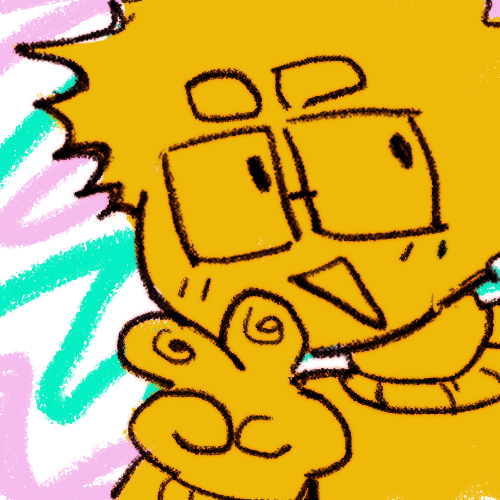

Azrael Casilan,
a filipino 2D and 3D concept artist and character designer.
I specialize in making 2D graphics and concept illustrations, even before this line of work was an idea in my mind.
I am able to critique, manage, assign and sort priorities for projects through Clickup.
I find passion in any and everything I do, even when it comes to a challenge. Through Tec-Voc High School's Interactive Digital Media
I had the opportunity to have experience with Blender, Adobe’s Photoshop and
Illustrator. I was assessed well in graphic design and following those principals, utilizing them when
assigned in small studios within the course.
I am able to critique, manage, assign and sort priorities for projects through Clickup.
I
find passion in any and everything I do, even when it comes to a challenge.
skills:
Computer proficiency, 2D/3D digital art, Basic understanding of
programming languages (C#, javascript, html) , Good teamwork and communication, Creativity, Adaptable